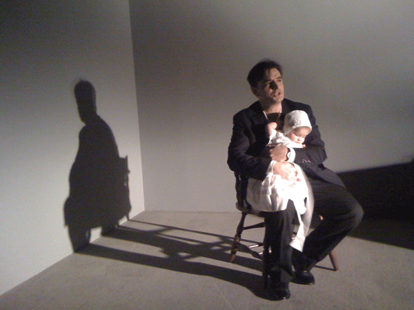
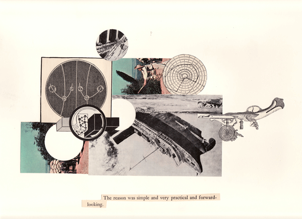
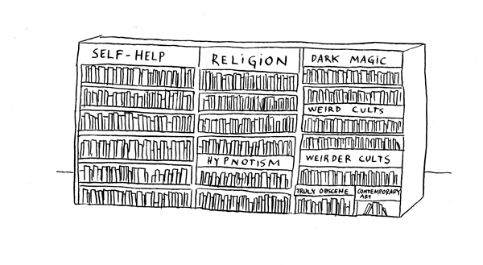

-
Art and Pedgogy: Interview with Pablo Helguera
by Idiom August 24, 2010
Pablo Helguera, Wakefield, performance at Center for Curatorial Studies, Bard College, 2010 via the artist
Through his two-decade artistic career, Pablo Helguera has worked in a number of media; collages, drawings, videos, and installations, as well as performing as a variety of characters based on personal stories or historical accounts. Throughout his work, Helguera does not ask us to decipher meaning, offering instead straightforward explanatory prose that illuminates his sources and ideas.
Helguera easily cites literature – from the Greek poets through to contemporary writers – and conducts extensive research for his projects. Helguera’s concern with pedagogy has turned him into an interpreter who describes, provides facts and narrates stories, provoking curiosity in his audience.
When Helguera performs he combines both interactive and educational tools into a hybrid genre called performative lectures. He has organized or presented over a thousand lectures, panels and events concerning interpretive art methodologies, providing information, interpretation, and education along the way.
Helguera recently published his twelfth book Urÿonstelaiiwhich presents an imaginary community with strange resonances to our current moment.
Curator Yulia Tikhonova talked to Helguera about his practice.
Yulia Tikhonova: Your interests are very broad and you’ve been very prolific. Is there an overall theme that unites your practice? I am trying to gather what you are about.
Pablo Helguera: I sincerely hope that I never find out “what I am about”. That is the battle that most artists lose. To me, once you are told what you “are about” you have effectively been taxidermied by history. So I will try to hold out for as long as I can.
YT: Are there specific things you find yourself reacting against?
PH: Growing up in Mexico, I saw my father struggle with money and be humiliated by arrogant rich people. I remember once feeling identified with the boy in Vittorio de Sica’s The Bicycle Thief. I am particularly intolerant toward hypocrisy, pretentiousness, injustice, and class-ism.
Pablo Helguera, The reason was simple, 2008, via the artist
YT: You create programming at an art museum’s education department. Has this figured into your works that deal with education and pedagogy?
PH: I have done museum education for 20 years and been an artist for just as long. They are two sides of the same coin. I find communication, cognition, and collective experience to be inextricable from art. I think one side helps understand the other.
YT: How do you see yourself navigating the different roles of artist, educator and museum employee?
PH: I see myself as a vague, nebulous formation that someone sees in a telescope but is actually the ghost light from some long-extinct, faraway galaxy.
YT: Is there something specific you are trying to teach?
PH: I don’t “try” to “teach” anything. I don’t see education as a medicine that people forcibly need to take and swallow like in Catechism. Instead, I see it as a liberating force that equalizes situations and creates unique individuals.
YT: How do you see your role fitting into the larger community?
PH: I keep second-guessing myself on that one. I sometimes feel like I live in a giant stadium looking for my seat. I keep trying each and every one of them but I am always sitting in the wrong place. Nowadays I think that my role is to jump from one role to the next.
YT: Could you think of other artists whose interest in education prefigured your own project?
PH: I don’t know what this says about me, but I can’t think of a single artist-educator at this moment. Especially not Joseph Beuys, who really was more of a Messiah-artist. I just can’t deal with the artist list game. But I will name a few educators whom I consider important: Augusto Boal, Paulo Freire, Jerome Brunner, Mihaly Csikszentmihaly, Howard Gardner, Friedrich Fröebel, and Loris Malaguzzi.
Pablo Helguera, The School of Panamerican Unrest, May 2006 via the artist
YT: Who have you learned the most from?
PH: My brother, the writer Luis Ignacio Helguera, who died at the age that I am now.
YT: History, language, teaching – these are sometimes seen as flirting with a certain didacticism. How do you navigate these issues? Is there a moral component to your work?
PH: History and language are not didactic subjects and as I mentioned, I don’t teach. It’s true that you could take a didactic approach toward anything, but that just creates a social hierarchy that has nothing to do with knowledge. I am for facilitating critical exchanges and creating an environment where people gain insights about things, without the pretension that we all share the same kinds of knowledge. And if you have to bring up morality, I think I rather see myself as a closeted ‘immoralist’ (in the sense of Andre Gide’s novel The Immoralist).
YT: Considering your Artoons, as well as the recent play about the art world, The Juvenal Players, I am curious about your relationship to satire.
PH: I think satire is a very misunderstood genre, and that’s why I like it. People think they can dismiss it, but they can’t. Look at the way public opinion is influenced in politics; satire here can play a very important role. Good satire has also the very strange ability to remain contemporary forever, which humor and solemnity (which is most of the art made anytime) don’t have.
YT: What do you see in the future for you and your work?
PH: I think I will go nowhere and die broke, forgotten and abandoned and that the totality of my studio will end up somewhere in a storage container in the Chicago suburbs for 20 years after I die, after which my daughter will come to pick it up and just donate everything to a charity thrift shop. That would be wonderful.
YT: Can you speak a little about the role of melodrama and sentimentality in your work?
PH: When I was a teenager I wanted to be a baritone, so I guess I do have a natural inclination toward histrionics that sometimes puzzles. But by the same token I have always been fascinated about how the art world is so afraid of sharing their feelings, as if we all were abuse victims. Maybe we were abused by Modernism.
YT: Could you tell more about your recent online project “The Estheticist”, a series of your responses to letters concerning art circuit politics?
PH: I started “The Estheticist” because I think that the over-professionalization of art has created all sorts of personal and ethical quandaries that are almost never discussed publicly, and I wanted to make that manifest. I would like this free service to contribute in fostering a dialogue around these issues and shed light on the art practice in general. Personally, I am just very interested in the sociology of art, or what I have proposed over the last two years or so as the new academic field of “art world studies”. The questions that I have received so far are fascinating and indeed very revealing of the kind of anxieties, taboos and inner conflicts that people in the art world experience. Not a pretty picture.
Pablo Heleguera, Self Help, published in ARTOONS (Jorge Pinto Books, 2009) via the artist
YT: Do you think that it is possible for an artist to work in an art institution and at the same time be critical about institutional practices at large? How do you reconcile an institutional affiliation with its critique?
PH: I believe that institutions are nothing but collections of individuals. If you would agree with that, then you would need to agree that because one can be critical with oneself, of course there could be criticality within institutions too. It’s true that one lacks perspective, but at the same time internal debate is key to informing our decisions–which also applies to individuals and institutions. Otherwise we would just behave erratically being told what to do by a wide random group of opinions.
Furthermore, I would argue that inasmuch as we are implicated in a system–in this case the art system–we all belong to the larger institution of art. To behave like an absolute outsider is an illusion. Just think about what we say to people who hate contemporary art who have absolute no background or knowledge: we simply dismiss them as ignorant. I believe that complete outsider-ness in the field of art is an illusion. Finally, the notion of institution is relative: some major artists are institutions, and in fact their staff in their studios is larger than the staff of a small museum. Yet we maintain the myth that artists are lone rangers and museums are monolithic, faceless and powerful forces.